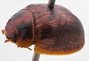
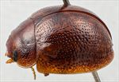
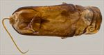
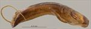
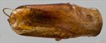
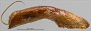
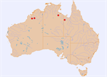

Click on images to enlarge
![Male, Cape Crawford, Northern Territory [QM]](assets/image/Ta175/Ta175_AGM-087_SM.jpg){kind=link}

Male, Cape Crawford, Northern Territory [QM]


Male, Fitzroy River, NW Western Australia


Aedeagus, dorsal view (Cape Crawford, Northern Territory)


Aedeagus, lateral view (Cape Crawford, Northern Territory)


Aedeagus, dorsal view (Fitzroy River, NW Western Australia)


Aedeagus, lateral view (Fitzroy River, NW Western Australia)


Distribution
Name
Trachymela simplex (Blackburn)
Reference specimen
1999-0234c, Fitzroy River, Myroodah Crossing, NW Western Australia.
Adult Description
Length: ♂ 4.5–5.5 mm (n=8), ♀ 4.5–5.8 mm (n=9).
Colouration:
- Head: Light- to mid-brown, mandibles concolorous with black tips, labrum straw-brown; antennae uniformly straw-brown.
- Pronotum: Brown, concolorous with head, usually with two longitudinally-oriented and closely spaced slightly darker, brown maculae, the inner situated behind inner edge of eye is relatively thin, the outer centred behind centre of eye is broader, often one or both of these maculae are very poorly defined or even absent.
- Scutellum: Brown, concolorous with or fractionally darker than adjacent area of pronotum, sometimes with a thin border of a darker shade.
- Elytra: Brown, concolorous with pronotum, usually with fractionally darker patches scattered throughout disc in no defined pattern, these darker patches usually the result of extended dark borders around punctures, sometimes these darker patches are more concentrated, with a band that extends from humeral callus posteriorly along centre of disc being most frequent, the area around elytral summit is sometimes darker than surrounds and less often the border of disc, humeral callus variable, concolorous with surrounds or fully or partially black.
- Venter & Legs: Venter almost completely light- to mid-brown, rarely with lateral regions of metaventrite fractionally darker, legs concolorous, epipleura brown.
- Cuticular Wax: Uniformly light brown, distributed a little unevenly but quite densely over most of dorsal surface.
Morphology:
- Shape: Body small, evenly rounded, greatest height viewed laterally a little in front of, rarely at middle of elytral margin.
- Head: Punctures moderate in size (pd ≈ 1.5–2×ef) and evenly and densely distributed. Antennae short (AL/BL: ♂ 34–37%, ♀ 31–33%), filiform.
- Pronotum: Almost evenly curved transversely, very slightly explanate at extreme margins, lacking a foveal depression, an approximately round and very slightly elevated region is usually present in line with each eye, puncturation clearly impressed in discal area, evenly distributed and moderately dense (spacing ≈ 3–4pd), becoming much coarser towards lateral margins. Front margins join lateral margins in a smoothly rounded right-angle, with lateral margin initially straight or very lightly curved for a short length and then curving smoothly and gradually towards rear margin.
- Scutellum: Surface smooth or slightly rough, unpunctured or some very fine punctures present in anterior half.
- Elytra: Surface evenly curved, punctures distinct and evenly and closely distributed (pd ≈ 2pd) over almost the whole surface, interstices flat for the most part, never obscuring punctures, with much smaller punctures scattered over them, interstices in posterior third slightly more convex, sometimes appearing as interrupted longitudinal weals, never obscuring punctures, surface continuous under humeral callus, elytral suture carinate in posterior third, lateral margins straight. Vertical extension of epipleura considerable (HCE/PW = 0.34–0.40).
- Venter: Prosternal process narrowest anteriorly and gradually widening towards posterior, rarely almost parallel-sided, open or lightly-closed anteriorly, very sparse scatter of short setae at rear of prosternal process and mesoventrite, a single seta on anterior and median trochanter; front edge of metaventrite beveled, truncate; inner edge of posterior of epipleurae lacking setae.
Male Genitalia (Aedeagus):
- Dimensions: Moderate (LPE/BL = 29–32%).
- Dorsal view: Shaft widest at basal sulcus then narrowing briefly before becoming almost parallel-sided to about middle of ostium level, from where the sides converge towards apex in a smooth, convex arc, dorsal surface smoothly curved with well-defined, broad and quite deep dorso-median channel, dorso-lateral channels broad and well developed, with pair of dorsal ostial processes projecting far towards but not reaching level of apex, the split in the dorsal ostial processes is a considerable distance from rear of dorso-lateral channels, rear of ostium at 50–54% of distance from basal sulcus to apex, ostium large, tip protruding slightly.
- Lateral view: Shaft curved very slightly near basal sulcus, then almost straight throughout central and apical regions (rarely very slightly curved near apex), thinning towards apex over 20% of length with dorsal ostial processes often projecting well above upper surface, tip deflexed, flagellum very thin and very loosely curved or straight.
Immature Stages
Unknown.
Similar species
- Ta222: A very similar, though slightly larger species that tends to lack the dark markings on the pronotum and elytra.
- Ta36: There is almost nothing that will reliably distinguish these two species. The dark markings on the pronotum and elytra tend to be more pronounced in Ta36, though there is considerable overlap between the two species. The puncturation on the pronotum of Ta175 is more evenly spaced than in Ta36, though it is a subtle distinction. Ta36 has longer antennae than Ta175, though this difference may be very small or non-existent for females. The sides of the aedeagus of Ta175 narrow slightly more gradually towards the apex from the ostium. The aedeagus also is slightly longer in Ta36 than Ta175 for similar-sized specimens, though the difference is small and based on just a few measurements. The two species are widely allopatric.
Notes
- Taxonomy: Ta175 is identified as Trachymela simplex (Blackburn) by comparison of the description, type locality and images of the Paropsis simplex type specimen in the Natural History Museum, London (BMNH).
- Host Associations: Ta175 has been collected from two not closely related eucalypt species: the ghost gum Blakella bella (a single record) and Eucalyptus camaldulensis (10 specimen records, albeit all from the same location and date, thus suggesting the latter may be from a single host identification). Most of the orbicularis group species feed on Corymbia or Angophora, though one (Ta221) is found on Eucalyptus platyphylla. Thus, either host is possible though a single species feeding on both not at all closely related hosts is probably unlikely. The Queensland specimens were obtained at light and thus no host data is available for them.
- Morphological Variation: The single male specimen from B. bella [2007-314] differs from the others in some characteristics of the aedeagus, viz., the posterior outline of the ostium is clearly defined rather than merging almost smoothly with the dorsal surface behind it, there is a distinct downward turn of the apex in lateral view, and it is fractionally shorter. This difference in the posterior ostium structure is also shared with a specimen from Cape Crawford, N.T. [QM:GM-087, no host data], and to a lesser extent with a specimen from Lawn Hill, N. Qld [2020-017]. None of these differences are definitive but along with the very different hosts do suggest that Ta175 as defined here may include two separate species.
Copyright © 2026. All rights reserved.